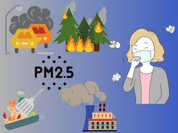
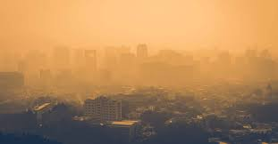
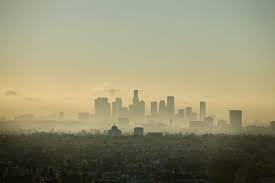
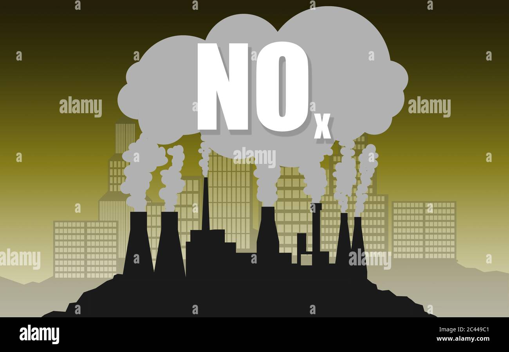
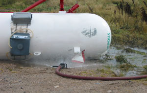
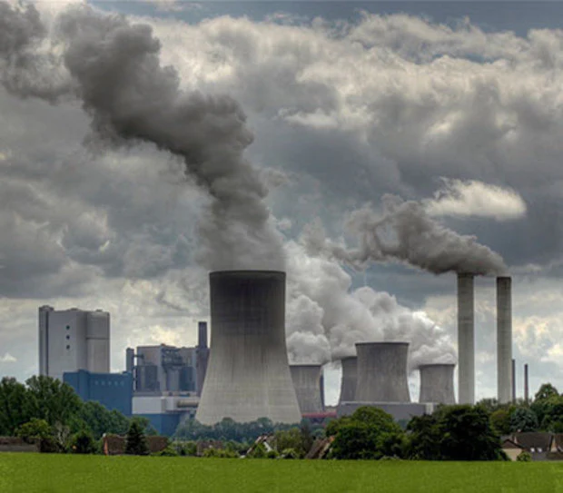
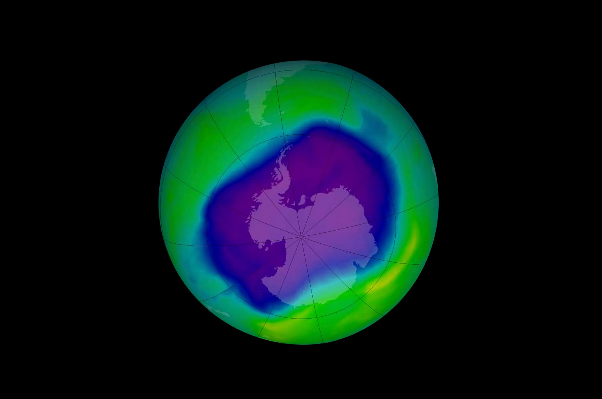
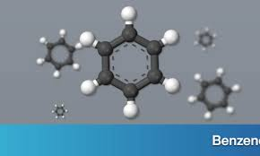

Detailed Information on Pollutants
PM2.5 (Fine Particulate Matter)
Source: Emissions from vehicles, industrial activities, and burning of fossil fuels.
Impact on Human Health: Causes respiratory diseases, heart diseases, and lung cancer.
Environmental Impact: Contributes to air pollution, reducing visibility and causing acid rain.
PM10 (Coarse Particulate Matter)
Source: Dust storms, vehicle exhaust, industrial emissions.
Impact on Human Health: Causes respiratory issues, aggravates asthma and lung diseases.
Environmental Impact: Can degrade soil and water quality by settling on surfaces.
Nitric Oxide (NO)
Source: Emissions from vehicles, power plants, and agriculture.
Impact on Human Health: Contributes to respiratory issues, exacerbates asthma.
Environmental Impact: Contributes to the formation of ground-level ozone and acid rain.
Nitrogen Dioxide (NO₂)

Source: Emissions from vehicles, combustion processes, and power plants.
Impact on Human Health: Aggravates asthma, causes lung infections, and reduces lung function.
Environmental Impact: Contributes to acid rain and ground-level ozone, leading to smog.
Nitrogen Oxides (NOx)
Source: Combustion of fossil fuels, industrial activities, and vehicles.
Impact on Human Health: Respiratory and heart diseases, aggravates asthma.
Environmental Impact: Contributes to smog and acid rain.
Ammonia (NH₃)
Source: Agricultural activities, livestock waste, industrial processes.
Impact on Human Health: Irritates the eyes, skin, and respiratory system.
Environmental Impact: Contributes to nutrient pollution in water bodies and acid rain.
Carbon Monoxide (CO)
Source: Incomplete combustion of fuels in vehicles and industrial processes.
Impact on Human Health: Can cause poisoning, headaches, nausea, and confusion.
Environmental Impact: Contributes to smog formation and affects vegetation growth.
Sulfur Dioxide (SO₂)
Source: Fossil fuel combustion in power plants, industrial processes, and vehicle emissions.
Impact on Human Health: Causes respiratory problems and irritation in the eyes and throat.
Environmental Impact: Contributes to acid rain and harms plant life.
Ozone (O₃)
Source: Formed from nitrogen oxides and volatile organic compounds in the presence of sunlight.
Impact on Human Health: Can irritate the respiratory system and exacerbate asthma.
Environmental Impact: Damages crops and vegetation, reducing photosynthesis.
Benzene
Source: Emissions from vehicle exhaust, industrial processes, and tobacco smoke.
Impact on Human Health: Causes cancer, especially leukemia.
Environmental Impact: Benzene is a volatile organic compound contributing to smog formation.
Toluene
Source: Vehicle exhaust, industrial emissions, and solvent-based products.
Impact on Human Health: Causes headaches, dizziness, and liver damage.
Environmental Impact: Contributes to the formation of smog and ground-level ozone.